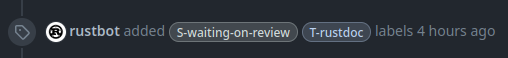

Rust compiler merge process
by Guillaume Gomez
Who am I?
Rust language reviewer and contributor. Member of:- rustdoc team (team leader)
- docs.rs team
- dev-tools team
I am a Huawei engineer.
A pull-request is opened
A reviewer is assigned by the rustbot bot...
A pull-request is opened
... And tags are added as well
Governance website
rust-lang.org/governance
Approval
- If the pull request:
- Has no performance impact
- Makes no breaking change
- Doesn't add new feature
- CI passes

Performance
Pull request was merged, but now it's time to check for performance impact.perf.rust-lang.org


Checking for potential regressions
In case a pull request changes things that could introduce a regression, we use crater.Crater
crater.rust-lang.org

Tips for potential new contributors
- Look at E-easy or E-mentor tagged issues.
- Read the rustc dev guide: rustc-dev-guide.rust-lang.org
- Try to write compiler plugins or contribute to clippy to see how the compiler internals work
To help you with compiler plugins, take a look at the rustc-tools crate.
Thank you for listening!
More Rust things on< blog.guillaume-gomez.fr >
< guillaume1.gomez@gmail.com >
 @GuillaumeGomez
@GuillaumeGomez
 @imperioworld_
@imperioworld_
 @imperio@toot.cat
@imperio@toot.cat